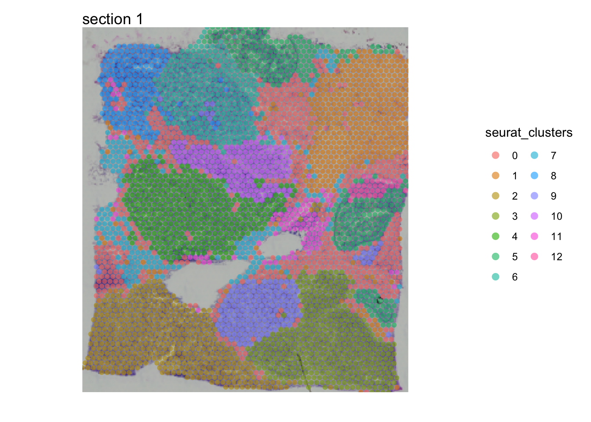
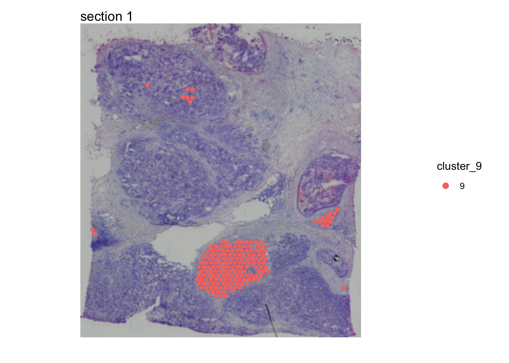
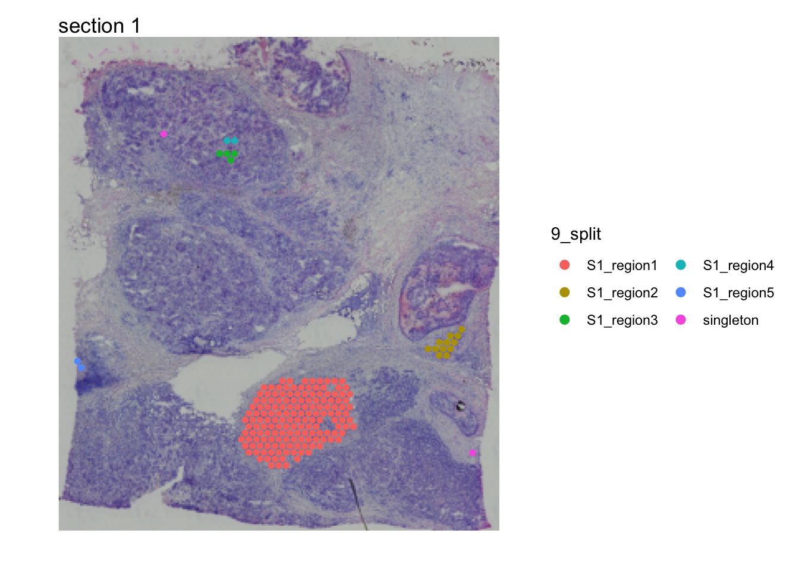
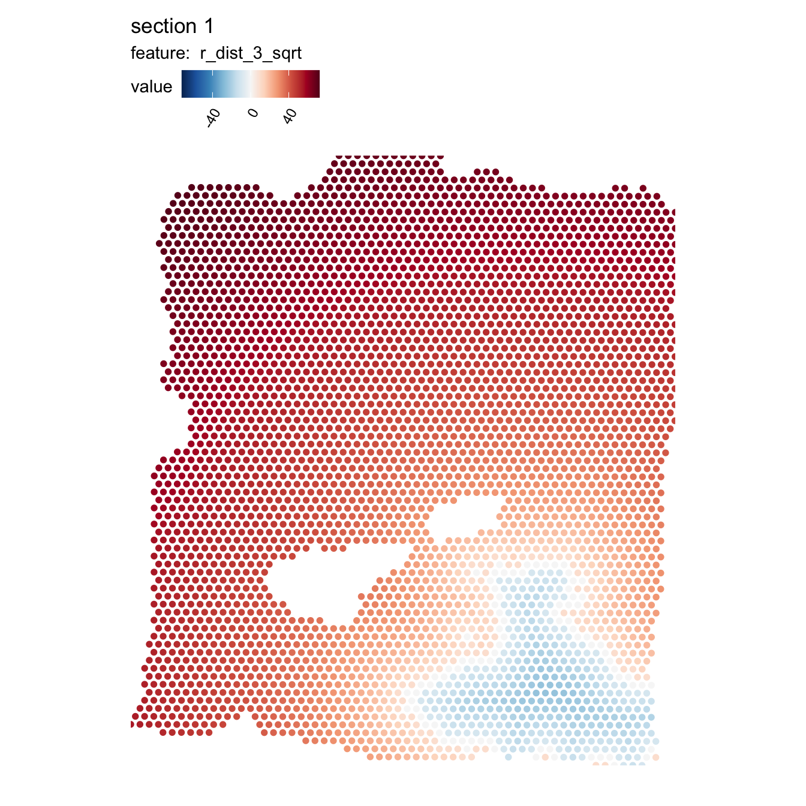
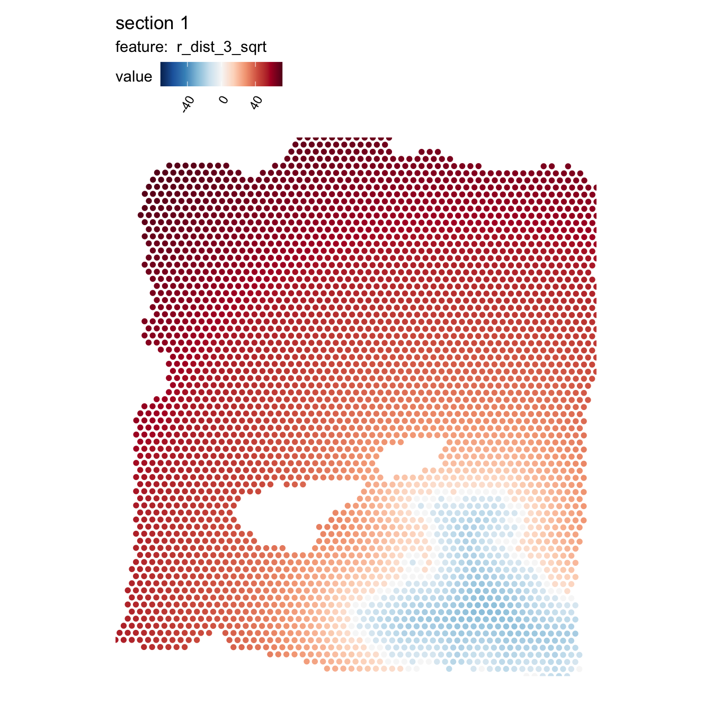
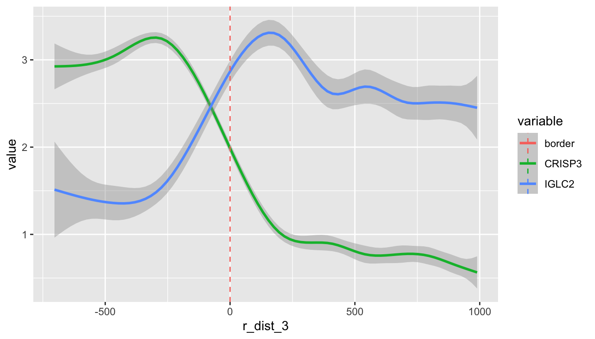

library(tibble)
library(ggplot2)
library(patchwork)
library(STUtility2)
library(scico)
library(tidyr)
library(dplyr)Spatial methods
Introduction
In this notebook, we’ll have a look at how you can use spatial methods in STUtility2.
Load data
First we need to load some 10x Visium data. here we’ll use a breast cancer dataset provided by 10x
samples <- Sys.glob("~/BC_data/*/filtered_feature_bc_matrix.h5")
imgs <- Sys.glob("~/BC_data/*/spatial/tissue_hires_image.png")
spotfiles <- Sys.glob("~/BC_data/*/spatial/tissue_positions_list.csv")
json <- Sys.glob("~/BC_data/*/spatial/scalefactors_json.json")
# Create a tibble/data.frame with file paths
infoTable <- tibble(samples, imgs, spotfiles, json, sample_id = c("S1", "S2"))
# Create Seurat object
se <- ReadVisiumData(infoTable = infoTable[1, ])── Reading 10x Visium data ──ℹ Loading matrices:
✔ Finished loading expression matrix 1
ℹ only 1 expression matrix loaded.
✔ There are 33538 features and 3813 spots in the matrix.
ℹ Loading coordinates:
✔ Finished loading coordinates for sample 1
✔ Collected coordinates for 3813 spots.
── Creating `Seurat` object
✔ Expression matrices and coordinates are compatible
→ Created `Seurat` object
→ Created `Staffli` object
→ Loaded spatial data into the `Seurat` object
✔ Returning a `Seurat` object with 33538 features and 3813 spotsData
Next, we’ll use Seurat to run a simple data processing/analysis workflow:
normalize data
scale data
find variable features
run dimensionality reduction by PCA
Create SNN graph
Cluster data
se <- se |>
NormalizeData() |>
ScaleData() |>
FindVariableFeatures() |>
RunPCA() |>
FindNeighbors(reduction = "pca", dims = 1:30) |>
FindClusters()Modularity Optimizer version 1.3.0 by Ludo Waltman and Nees Jan van Eck
Number of nodes: 3813
Number of edges: 141050
Running Louvain algorithm...
Maximum modularity in 10 random starts: 0.8713
Number of communities: 13
Elapsed time: 0 secondsNow that we have identified clusters in our data based on the spot expression profiles, we can plot these clusters spatially with MapLabels.
se <- LoadImages(se)── Load H&E images ──ℹ Loading image from /Users/ludviglarsson/BC_data/BC_block_S1/spatial/tissue_hires_image.png
✔ Scaled image from 2000x2000 to 400x400 pixels
ℹ Saving loaded H&E images as 'rasters' in Seurat objectMapLabels(se, column_name = "seurat_clusters", override_plot_dims = TRUE,
image_use = "raw", pt_alpha = 0.6, pt_size = 2) +
plot_layout(guides = "collect") &
theme(legend.position = "right") &
guides(fill = guide_legend(override.aes = list(size = 3), ncol = 2))
For the purpose of this analysis, we just need to define a region of interest in our tissue sections. We could just as well use the tissue morphology as a basis to define this region. From the plot above, we can see that some clusters are confined to distinct regions, for example cluster 9:
se$cluster_9 <- ifelse(se$seurat_clusters %in% "9", "9", NA)
MapLabels(se, column_name = "cluster_9", override_plot_dims = TRUE,
image_use = "raw", drop_na = TRUE, pt_size = 2) +
plot_layout(guides = "collect") &
theme(legend.position = "right") &
guides(fill = guide_legend(override.aes = list(size = 3), ncol = 2))
Disconnect regions
Cluster 9 is concentrated to a region rich with cancer cells but there are also a few spots in other parts of the tissue. At this point we might only be interested in one of these regions in which case we can split cluster_9 into spatially disconnected compartments. For this purpose, we can use DisconnectRegions:
se <- DisconnectRegions(se, column_name = "seurat_clusters", sel_groups = "9")Extracting disconnected components for group '9'
ℹ Detecting disconnected regions for 178 spots
Loading required namespace: tidygraph
ℹ Found 5 disconnected graph(s) in data
ℹ Sorting disconnected regions by decreasing size
ℹ Found 2 singletons in data
→ These will be labeled as 'singletons'MapLabels(se, column_name = "9_split", override_plot_dims = TRUE,
image_use = "raw", drop_na = TRUE, pt_size = 2) +
plot_layout(guides = "collect") &
theme(legend.position = "right") &
guides(fill = guide_legend(override.aes = list(size = 3), ncol = 2))
Each spatially disconnected region in cluster 9 now has its own label, order from largest to smallest. Singletons are spots that are completely isolated from other spots with the same label.
Radial distance
Imagine that we are interested in looking at the expression of certain genes as a function of distance to a region of interest. We can compute distances from a region of interest (ROI) using RadialDistances. Here we’ll use cluster 3 as our ROI for the computation:
se <- RadialDistance(se, column_name = "seurat_clusters", sel_groups = "3")Running calculations for sample 1
Calculating radial distances for group '3'
ℹ Extracting border spots from a region with 416 spots
→ Detected 84 spots on borders
→ Detected 332 spots inside borders
→ Detected 3397 spots outside borders
✔ Returning radial distancesWe can illustrate the results by coloring the spots based on the radial distances from “S1_region1”:
MapFeatures(se, features = "r_dist_3", center_zero = TRUE, pt_size = 2,
colors = RColorBrewer::brewer.pal(n = 11, name = "RdBu") |> rev(),
override_plot_dims = TRUE)
The distances are calculated from the border of the ROI, where positive values represent the radial distances out from the ROI and negative values represent the radial distances towards the center of the ROI.
The distances are given as pixels relative to the image pixels coordinates that were loaded when creating the Seurat object. If we know the conversion factor between pixels in our original H&E image and microns, we can easily convert the radial distances to microns. In this example data, the center-to-center spot distance is 273 pixels in the image and we know that the actual center-to-center spot distance is 100 microns.
se$r_dist_3 <- (100/273)*se$r_dist_3The scale of the distances is somewhat inconvenient for our color scale, so we can apply some transformation to make them easier to visualize, for example the square root of the distance:
se$r_dist_3_sqrt <- sign(se$r_dist_3)*sqrt(abs(se$r_dist_3))
MapFeatures(se, features = "r_dist_3_sqrt", center_zero = TRUE, pt_size = 2,
colors = RColorBrewer::brewer.pal(n = 11, name = "RdBu") |> rev(),
override_plot_dims = TRUE)
With these distances, we can now explore the expression of certain genes as a function of distance from our ROI. Here we are only interested in the microenvironment outside of our cluster 3, so we will filter the data to have a maximum radial distance of 1000 microns outside of cluster 3:
sel_genes <- c("CRISP3", "IGLC2")
se[[]] |>
bind_cols(FetchData(se, vars = sel_genes)) |>
filter(r_dist_3 < 1e3) |>
pivot_longer(all_of(sel_genes), names_to = "variable", values_to = "value") |>
ggplot(aes(r_dist_3, value, color = variable)) +
geom_smooth(method = "gam", formula = y ~ s(x, bs = "cs")) +
geom_vline(aes(xintercept = 0, color = "border"), linetype = "dashed")
Here we can see that the expression of CRISP3 is high inside cluster 3 and declines rapidly at the border whereas IGLC2 show the opposite trend. We can also visualize these trends spatially:
MapFeatures(SubsetSTData(se, expression = r_dist_3 < 1e3),
features = sel_genes, override_plot_dims = TRUE, scale_alpha = TRUE,
image_use = "raw", pt_size = 2)
So why bother using radial distances? Having access to this information makes it possible to identify genes that change with distance to a ROI. In the example above, we could for example identify genes whose expression decrease or increase expression distance from the tumor which gives us a useful tool to characterize the tumor microenvironment. A perhaps even more useful application is to explore the relative abundance of cell types around or inside the tumor border.